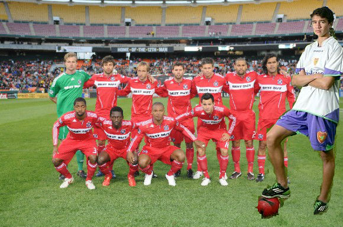

Chicago Fire's Newest Member
5SOS member, Calum Hood was a soccer player before he joined his band. Doing soccer has always been his dream before music came into his life. He would never stop practicing day and night. He even went to Brazil to represent Austrailia. Now 5 years later after the band became a band, he got a huge oppertunity to play for the Chicago Fire soccer team in Chicago.